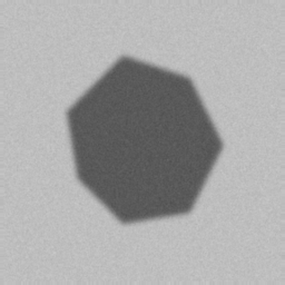
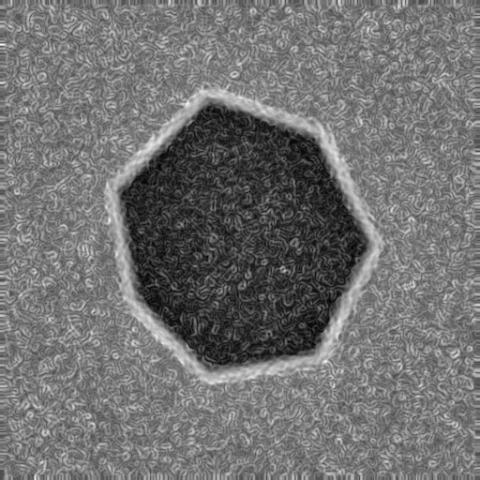

About MelanoLens AI
Skin Lesion Boundary Enhancement and Detection Using Computer Vision. See the Edges. Understand the Boundaries.
Objective
Lesion boundaries in dermoscopic images can be faint, blurry or noisy, and ordinary edge detection may give fragmented edges and background artifacts. The Edge Booster strengthens meaningful gradients before detection. The central question is: does edge enhancement improve skin lesion boundary detection compared with conventional edge detection? The app lets you answer it with real outputs and, when a reference mask exists, real metrics.


Illustration only: a synthetic lesion-like shape from the project's test generator. It is not patient data and not a real analysis result.
How it works
1. Upload & validate
JPG/PNG files are checked for type, size and readability in the browser and again on the server.
2. Preprocess
Grayscale, optional noise filter, CLAHE, hair reduction and resizing.
3. Enhance & detect
Every detector runs on the conventional image and on the Edge Booster output with identical parameters.
4. Extract the boundary
Edge maps are closed, contours traced and filtered, and one candidate is selected and filled into a mask.
5. Evaluate
With a reference mask, Dice, IoU, precision, recall, F1 and boundary F1 are computed from the saved masks.
Core capabilities
- Preprocessing: grayscale conversion; Gaussian blur (Gaussian noise); median filter (impulse noise); bilateral filter (smoothing that keeps edges); CLAHE (local contrast); optional resizing and hair-artifact reduction (black-hat + inpainting).
- Edge detectors: Canny, Sobel, Prewitt (explicit kernels), Laplacian, and Laplacian of Gaussian.
- Boundary extraction: binary edge map → morphological closing/opening → external contours → area filtering → candidate selection → filled candidate mask.
- Evaluation: Dice, IoU, precision, recall, F1, Boundary F1 (with pixel tolerance), and an edge-map F1 against the reference boundary.
CNN modules: segmentation and classification
Besides the classical pipeline, MelanoLens AI can run two CNNs that you train yourself on ISIC data (see the README): a U-Net that predicts the lesion mask, and a MobileNetV2 classifier that predicts a diagnosis category from the dataset's labels. The Boundary Analysis page shows the classical and CNN boundaries side by side; the Evaluation page shows each model's held-out test metrics.
- A CNN is not automatically more accurate than classical image processing; compare them with the metrics.
- Classification output is a model prediction, not a confirmed medical diagnosis.
- If a model has not been trained, the CNN buttons are disabled; the app never shows placeholder predictions.
Edge Booster mathematics
Sobel gradient enhancement. With horizontal and vertical gradients Gx and Gy:
I_enhanced = normalize(I + α · G)
G is first scaled to 0–255. α controls strength; α = 0 only stretches the contrast. Noise also has gradients, so large α amplifies noise.
Laplacian sharpening. OpenCV's Laplacian kernel has a negative centre, so:
A small Gaussian pre-blur limits noise amplification.
Morphological gradient.
Multi-scale (experimental). Sobel responses at several Gaussian scales σi, each normalised to 0–1, are combined with weights wi:
Metrics.
Precision = TP / (TP + FP) Recall = TP / (TP + FN)
Enhancement can improve visual edge prominence but does not guarantee a more accurate segmentation.
Edge map, contour, mask
- Edge map: pixels where a detector responded.
- Contour: a traced outline around a connected edge region.
- Binary mask: the region filled inside a chosen contour. It is only a candidate lesion region derived from edges, not a ground truth and not clinically accurate.
Technology stack
Dataset sources
Images and optional reference masks can come from your own files or from the official ISIC Archive. Access terms and image licences are set by the archive and by each release; read them for the release you download. Not every release includes segmentation masks. No dataset is bundled with this app and no dataset statistics are shown. Dataset browsing is added in the next project milestone.
Privacy and storage
Everything runs on your computer. Uploaded images and generated results are stored in data/results/<result_id>/. Use "Delete stored result" in the workspace, or delete that folder, to remove them. Nothing is sent to third-party services. This app has no login and is intended for local educational use.
Known limitations
- Edge-based masks fail on very low-contrast lesions, heavy hair, rulers or markers, and vignetting.
- The largest contour may not be the lesion; check the candidate list.
- Thresholds are not tuned automatically, so results depend on the settings you choose.
- Metrics on a few images do not prove that enhancement helps in general.
- This is not a clinically validated system.